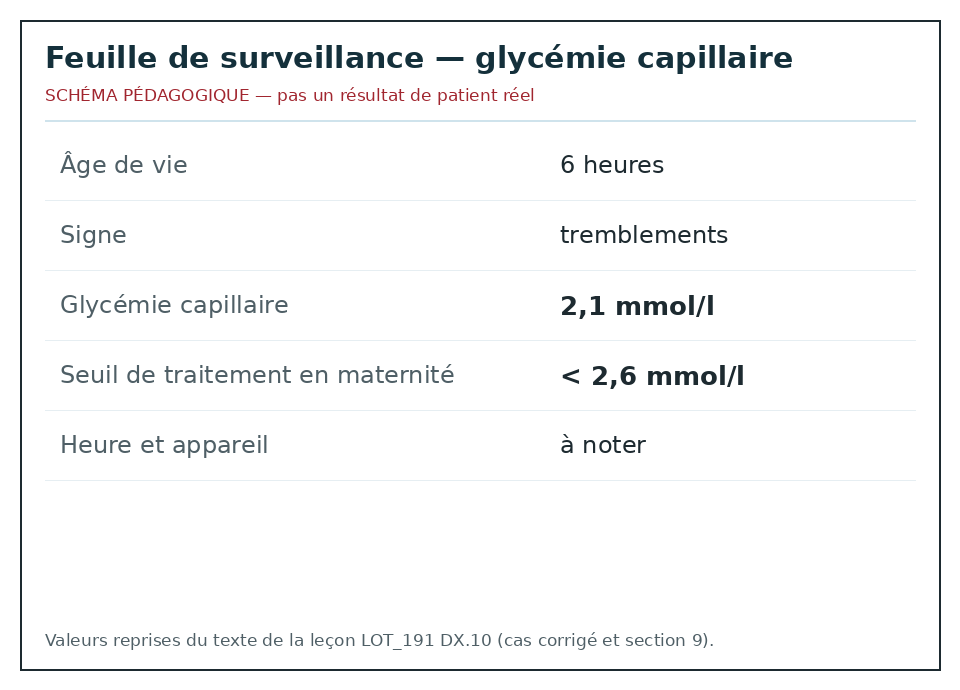
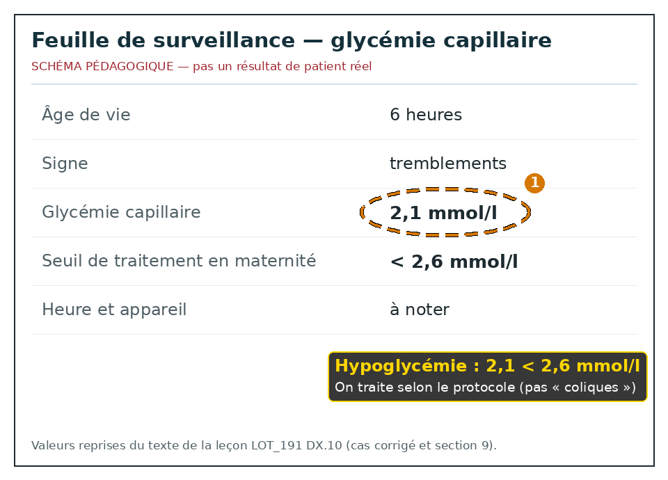

Hypoglycémie et erreur innée du métabolisme
Taille : mesurée par le script du dépôt.
L'essentiel
Hypoglycémie et erreur innée du métabolisme : les critères, les signes d'alarme et les doses lues sont dans les fenêtres.
1. Définition
Le détail est dans la fenêtre.
L'hypoglycémie et certaines erreurs innées du métabolisme rendent un nourrisson irritable, hypotonique, ou les deux.14
Le texte suisse de 2021 concerne la maternité, dès 35 semaines et 0 jour, pas le nourrisson de trois mois vu au cabinet.14
Dans ce champ, une valeur inférieure à 2,6 mmol/l est une hypoglycémie et demande une action.14
Le même texte refuse d'adopter 2,0 mmol/l comme seuil.14
Une erreur innée se soupçonne devant un intervalle libre puis vomissements, trouble de conscience et odeur ou acidose, sans chiffre inventé.14
À l'arrivée, pour Hypoglycémie et erreur innée du métabolisme, on vérifie qu'on est bien dans le champ de la maternité.
À l'arrivée, pour Hypoglycémie et erreur innée du métabolisme, on n'invente pas le nom d'une enzyme.
À l'arrivée, pour Hypoglycémie et erreur innée du métabolisme, on cite 4,6 mmol/l au quatrième jour de la même façon.
Après le déshabillage, pour Hypoglycémie et erreur innée du métabolisme, on cherche une infection en même temps qu'une hypoglycémie.
Après le déshabillage, pour Hypoglycémie et erreur innée du métabolisme, on ne promet pas l'absence de séquelle.
Avant l'ordonnance, pour Hypoglycémie et erreur innée du métabolisme, on ne rassure pas pour autant un enfant symptomatique.
Avant l'ordonnance, pour Hypoglycémie et erreur innée du métabolisme, on distingue valeur basse asymptomatique et convulsion.
Si le cri persiste, pour Hypoglycémie et erreur innée du métabolisme, on cherche un diabète maternel ou un petit poids.
Si le cri persiste, pour Hypoglycémie et erreur innée du métabolisme, on lit le carnet.
Avant le retour à domicile, pour Hypoglycémie et erreur innée du métabolisme, on suit la table suisse au lieu de la réciter de mémoire.
Avant le retour à domicile, pour Hypoglycémie et erreur innée du métabolisme, on transmet si les symptômes restent.
Quand la famille rappelle, pour Hypoglycémie et erreur innée du métabolisme, on note l'heure et l'appareil.
Quand la famille rappelle, pour Hypoglycémie et erreur innée du métabolisme, on ne remplace pas le glucose par du paracétamol.
Dans le compte rendu, pour Hypoglycémie et erreur innée du métabolisme, on traite sous 2,6 mmol/l en maternité.
Dans le compte rendu, pour Hypoglycémie et erreur innée du métabolisme, on note la dernière tétée.
Si un signe nouveau apparaît, pour Hypoglycémie et erreur innée du métabolisme, on vérifie qu'on est bien dans le champ de la maternité.
Si un signe nouveau apparaît, pour Hypoglycémie et erreur innée du métabolisme, on n'invente pas le nom d'une enzyme.
Si un signe nouveau apparaît, pour Hypoglycémie et erreur innée du métabolisme, on cite 4,6 mmol/l au quatrième jour de la même façon.
À la visite de contrôle, pour Hypoglycémie et erreur innée du métabolisme, on cherche une infection en même temps qu'une hypoglycémie.
À la visite de contrôle, pour Hypoglycémie et erreur innée du métabolisme, on ne promet pas l'absence de séquelle.
Devant les deux parents, pour Hypoglycémie et erreur innée du métabolisme, on ne rassure pas pour autant un enfant symptomatique.
2. Épidémiologie
Le détail est dans la fenêtre.
Plus d'un tiers des nouveau-nés sains à terme passent au moins une fois sous 2,6 mmol/l le premier jour.14
C'est surtout dans les 12 premières heures.14
La moyenne lue du plateau précoce est 3,3 mmol/l.14
Au quatrième jour, la moyenne lue est 4,6 mmol/l.14
Ces repères ne décrivent pas l'enfant de deux mois.14
À l'arrivée, pour Hypoglycémie et erreur innée du métabolisme, on n'applique pas 2,6 mmol/l à un enfant de deux mois comme si c'était le même texte.
À l'arrivée, pour Hypoglycémie et erreur innée du métabolisme, on arrête un apport seulement sur avis spécialisé.
À l'arrivée, pour Hypoglycémie et erreur innée du métabolisme, on écrit la case du schéma utilisée.
Après le déshabillage, pour Hypoglycémie et erreur innée du métabolisme, on appelle le centre devant un intervalle libre et des vomissements.
Après le déshabillage, pour Hypoglycémie et erreur innée du métabolisme, on cite la moyenne de 3,3 mmol/l comme description, pas comme cible personnelle.
Avant l'ordonnance, pour Hypoglycémie et erreur innée du métabolisme, on envoie en unité adaptée le prématuré de moins de 35 semaines.
Avant l'ordonnance, pour Hypoglycémie et erreur innée du métabolisme, on mesure devant toute convulsion.
Si le cri persiste, pour Hypoglycémie et erreur innée du métabolisme, on sait que plus d'un tiers des nouveau-nés sains descendent sous 2,6 mmol/l.
Si le cri persiste, pour Hypoglycémie et erreur innée du métabolisme, on ne parle pas de coliques à 6 heures de vie.
Avant le retour à domicile, pour Hypoglycémie et erreur innée du métabolisme, on prélève avant le soin seulement si cela ne retarde pas le sucre.
Avant le retour à domicile, pour Hypoglycémie et erreur innée du métabolisme, on explique la piqûre aux parents.
Quand la famille rappelle, pour Hypoglycémie et erreur innée du métabolisme, on donne du sucre à l'enfant symptomatique sans attendre inutilement.
Quand la famille rappelle, pour Hypoglycémie et erreur innée du métabolisme, on contrôle après le traitement.
Dans le compte rendu, pour Hypoglycémie et erreur innée du métabolisme, on n'adopte pas 2,0 mmol/l.
Dans le compte rendu, pour Hypoglycémie et erreur innée du métabolisme, on évalue le tonus et la succion.
Si un signe nouveau apparaît, pour Hypoglycémie et erreur innée du métabolisme, on n'applique pas 2,6 mmol/l à un enfant de deux mois comme si c'était le même texte.
Si un signe nouveau apparaît, pour Hypoglycémie et erreur innée du métabolisme, on arrête un apport seulement sur avis spécialisé.
Si un signe nouveau apparaît, pour Hypoglycémie et erreur innée du métabolisme, on écrit la case du schéma utilisée.
À la visite de contrôle, pour Hypoglycémie et erreur innée du métabolisme, on appelle le centre devant un intervalle libre et des vomissements.
À la visite de contrôle, pour Hypoglycémie et erreur innée du métabolisme, on cite la moyenne de 3,3 mmol/l comme description, pas comme cible personnelle.
Devant les deux parents, pour Hypoglycémie et erreur innée du métabolisme, on envoie en unité adaptée le prématuré de moins de 35 semaines.
3. Physiopathologie
Le détail est dans la fenêtre.
Après la naissance, l'apport de glucose dépend du lait et des réserves.14
Un diabète maternel, un petit poids ou un stress vident ces réserves.14
Le cerveau tolère mal une hypoglycémie prolongée, sévère ou répétée. Le suivi long du texte reste nuancé.14
Une erreur innée bloque une voie. Les toxiques s'accumulent après un intervalle où l'enfant allait bien.14
Le cri, les vomissements et la léthargie sont le mode d'arrivée commun, pas la preuve du nom de l'enzyme.14
À l'arrivée, pour Hypoglycémie et erreur innée du métabolisme, on traite sous 2,6 mmol/l en maternité.
À l'arrivée, pour Hypoglycémie et erreur innée du métabolisme, on note la dernière tétée.
Après le déshabillage, pour Hypoglycémie et erreur innée du métabolisme, on vérifie qu'on est bien dans le champ de la maternité.
Après le déshabillage, pour Hypoglycémie et erreur innée du métabolisme, on n'invente pas le nom d'une enzyme.
Après le déshabillage, pour Hypoglycémie et erreur innée du métabolisme, on cite 4,6 mmol/l au quatrième jour de la même façon.
Avant l'ordonnance, pour Hypoglycémie et erreur innée du métabolisme, on cherche une infection en même temps qu'une hypoglycémie.
Avant l'ordonnance, pour Hypoglycémie et erreur innée du métabolisme, on ne promet pas l'absence de séquelle.
Si le cri persiste, pour Hypoglycémie et erreur innée du métabolisme, on ne rassure pas pour autant un enfant symptomatique.
Si le cri persiste, pour Hypoglycémie et erreur innée du métabolisme, on distingue valeur basse asymptomatique et convulsion.
Avant le retour à domicile, pour Hypoglycémie et erreur innée du métabolisme, on cherche un diabète maternel ou un petit poids.
Avant le retour à domicile, pour Hypoglycémie et erreur innée du métabolisme, on lit le carnet.
Quand la famille rappelle, pour Hypoglycémie et erreur innée du métabolisme, on suit la table suisse au lieu de la réciter de mémoire.
Quand la famille rappelle, pour Hypoglycémie et erreur innée du métabolisme, on transmet si les symptômes restent.
Dans le compte rendu, pour Hypoglycémie et erreur innée du métabolisme, on note l'heure et l'appareil.
Dans le compte rendu, pour Hypoglycémie et erreur innée du métabolisme, on ne remplace pas le glucose par du paracétamol.
Si un signe nouveau apparaît, pour Hypoglycémie et erreur innée du métabolisme, on traite sous 2,6 mmol/l en maternité.
Si un signe nouveau apparaît, pour Hypoglycémie et erreur innée du métabolisme, on note la dernière tétée.
À la visite de contrôle, pour Hypoglycémie et erreur innée du métabolisme, on vérifie qu'on est bien dans le champ de la maternité.
À la visite de contrôle, pour Hypoglycémie et erreur innée du métabolisme, on n'invente pas le nom d'une enzyme.
À la visite de contrôle, pour Hypoglycémie et erreur innée du métabolisme, on cite 4,6 mmol/l au quatrième jour de la même façon.
4. Démarche diagnostique
Le détail est dans la fenêtre.
En maternité, on mesure selon le protocole suisse de 2021, pas selon un souvenir.14
On traite une valeur sous 2,6 mmol/l sans attendre une deuxième lecture si l'enfant est symptomatique.14
Au cabinet, devant un nourrisson mou, on mesure aussi, mais on n'applique pas aveuglément le seul libellé de maternité.14
On demande le délai depuis la naissance, l'alimentation, les vomissements et un intervalle libre.14
On prélève avant le traitement si cela ne retarde pas une minute le sucre d'un enfant symptomatique.14
À l'arrivée, pour Hypoglycémie et erreur innée du métabolisme, on n'adopte pas 2,0 mmol/l.
À l'arrivée, pour Hypoglycémie et erreur innée du métabolisme, on évalue le tonus et la succion.
Après le déshabillage, pour Hypoglycémie et erreur innée du métabolisme, on n'applique pas 2,6 mmol/l à un enfant de deux mois comme si c'était le même texte.
Après le déshabillage, pour Hypoglycémie et erreur innée du métabolisme, on arrête un apport seulement sur avis spécialisé.
Après le déshabillage, pour Hypoglycémie et erreur innée du métabolisme, on écrit la case du schéma utilisée.
Avant l'ordonnance, pour Hypoglycémie et erreur innée du métabolisme, on appelle le centre devant un intervalle libre et des vomissements.
Avant l'ordonnance, pour Hypoglycémie et erreur innée du métabolisme, on cite la moyenne de 3,3 mmol/l comme description, pas comme cible personnelle.
Si le cri persiste, pour Hypoglycémie et erreur innée du métabolisme, on envoie en unité adaptée le prématuré de moins de 35 semaines.
Si le cri persiste, pour Hypoglycémie et erreur innée du métabolisme, on mesure devant toute convulsion.
Avant le retour à domicile, pour Hypoglycémie et erreur innée du métabolisme, on sait que plus d'un tiers des nouveau-nés sains descendent sous 2,6 mmol/l.
Avant le retour à domicile, pour Hypoglycémie et erreur innée du métabolisme, on ne parle pas de coliques à 6 heures de vie.
Quand la famille rappelle, pour Hypoglycémie et erreur innée du métabolisme, on prélève avant le soin seulement si cela ne retarde pas le sucre.
Quand la famille rappelle, pour Hypoglycémie et erreur innée du métabolisme, on explique la piqûre aux parents.
Dans le compte rendu, pour Hypoglycémie et erreur innée du métabolisme, on donne du sucre à l'enfant symptomatique sans attendre inutilement.
Dans le compte rendu, pour Hypoglycémie et erreur innée du métabolisme, on contrôle après le traitement.
Si un signe nouveau apparaît, pour Hypoglycémie et erreur innée du métabolisme, on n'adopte pas 2,0 mmol/l.
Si un signe nouveau apparaît, pour Hypoglycémie et erreur innée du métabolisme, on évalue le tonus et la succion.
À la visite de contrôle, pour Hypoglycémie et erreur innée du métabolisme, on n'applique pas 2,6 mmol/l à un enfant de deux mois comme si c'était le même texte.
À la visite de contrôle, pour Hypoglycémie et erreur innée du métabolisme, on arrête un apport seulement sur avis spécialisé.
À la visite de contrôle, pour Hypoglycémie et erreur innée du métabolisme, on écrit la case du schéma utilisée.
5. Anamnèse et drapeaux rouges
Le détail est dans la fenêtre.
Tremblements, hypotonie, cri faible, pâleur, convulsion, refus de téter : signes compatibles.14
Un enfant asymptomatique avec une valeur basse en maternité reste dans le protocole, pas dans les coliques.14
Une odeur inhabituelle, une hépatomégalie ou une détresse après un intervalle libre font appeler le métabolicien.14
La fièvre oriente aussi vers l'infection. Les deux bilans se tiennent.14
On ne rassure pas un nouveau-né symptomatique avec un biberon seul non surveillé.14
À l'arrivée, pour Hypoglycémie et erreur innée du métabolisme, on note l'heure et l'appareil.
À l'arrivée, pour Hypoglycémie et erreur innée du métabolisme, on ne remplace pas le glucose par du paracétamol.
Après le déshabillage, pour Hypoglycémie et erreur innée du métabolisme, on traite sous 2,6 mmol/l en maternité.
Après le déshabillage, pour Hypoglycémie et erreur innée du métabolisme, on note la dernière tétée.
Avant l'ordonnance, pour Hypoglycémie et erreur innée du métabolisme, on vérifie qu'on est bien dans le champ de la maternité.
Avant l'ordonnance, pour Hypoglycémie et erreur innée du métabolisme, on n'invente pas le nom d'une enzyme.
Avant l'ordonnance, pour Hypoglycémie et erreur innée du métabolisme, on cite 4,6 mmol/l au quatrième jour de la même façon.
Si le cri persiste, pour Hypoglycémie et erreur innée du métabolisme, on cherche une infection en même temps qu'une hypoglycémie.
Si le cri persiste, pour Hypoglycémie et erreur innée du métabolisme, on ne promet pas l'absence de séquelle.
Avant le retour à domicile, pour Hypoglycémie et erreur innée du métabolisme, on ne rassure pas pour autant un enfant symptomatique.
Avant le retour à domicile, pour Hypoglycémie et erreur innée du métabolisme, on distingue valeur basse asymptomatique et convulsion.
Quand la famille rappelle, pour Hypoglycémie et erreur innée du métabolisme, on cherche un diabète maternel ou un petit poids.
Quand la famille rappelle, pour Hypoglycémie et erreur innée du métabolisme, on lit le carnet.
Dans le compte rendu, pour Hypoglycémie et erreur innée du métabolisme, on suit la table suisse au lieu de la réciter de mémoire.
Dans le compte rendu, pour Hypoglycémie et erreur innée du métabolisme, on transmet si les symptômes restent.
Si un signe nouveau apparaît, pour Hypoglycémie et erreur innée du métabolisme, on note l'heure et l'appareil.
Si un signe nouveau apparaît, pour Hypoglycémie et erreur innée du métabolisme, on ne remplace pas le glucose par du paracétamol.
À la visite de contrôle, pour Hypoglycémie et erreur innée du métabolisme, on traite sous 2,6 mmol/l en maternité.
À la visite de contrôle, pour Hypoglycémie et erreur innée du métabolisme, on note la dernière tétée.
Devant les deux parents, pour Hypoglycémie et erreur innée du métabolisme, on vérifie qu'on est bien dans le champ de la maternité.
6. Examen physique
Le détail est dans la fenêtre.
On évalue le tonus, la succion, la couleur et la respiration.14
On cherche une hépatomégalie et une fontanelle bombée.14
On regarde les organes génitaux si une anomalie endocrinienne est possible, sans conclure trop vite.14
L'examen nu reste fait, pour ne pas manquer une autre cause de cri.14
On note l'heure du dernier repas et l'heure de la glycémie.14
À l'arrivée, pour Hypoglycémie et erreur innée du métabolisme, on donne du sucre à l'enfant symptomatique sans attendre inutilement.
À l'arrivée, pour Hypoglycémie et erreur innée du métabolisme, on contrôle après le traitement.
Après le déshabillage, pour Hypoglycémie et erreur innée du métabolisme, on n'adopte pas 2,0 mmol/l.
Après le déshabillage, pour Hypoglycémie et erreur innée du métabolisme, on évalue le tonus et la succion.
Avant l'ordonnance, pour Hypoglycémie et erreur innée du métabolisme, on n'applique pas 2,6 mmol/l à un enfant de deux mois comme si c'était le même texte.
Avant l'ordonnance, pour Hypoglycémie et erreur innée du métabolisme, on arrête un apport seulement sur avis spécialisé.
Avant l'ordonnance, pour Hypoglycémie et erreur innée du métabolisme, on écrit la case du schéma utilisée.
Si le cri persiste, pour Hypoglycémie et erreur innée du métabolisme, on appelle le centre devant un intervalle libre et des vomissements.
Si le cri persiste, pour Hypoglycémie et erreur innée du métabolisme, on cite la moyenne de 3,3 mmol/l comme description, pas comme cible personnelle.
Avant le retour à domicile, pour Hypoglycémie et erreur innée du métabolisme, on envoie en unité adaptée le prématuré de moins de 35 semaines.
Avant le retour à domicile, pour Hypoglycémie et erreur innée du métabolisme, on mesure devant toute convulsion.
Quand la famille rappelle, pour Hypoglycémie et erreur innée du métabolisme, on sait que plus d'un tiers des nouveau-nés sains descendent sous 2,6 mmol/l.
Quand la famille rappelle, pour Hypoglycémie et erreur innée du métabolisme, on ne parle pas de coliques à 6 heures de vie.
Dans le compte rendu, pour Hypoglycémie et erreur innée du métabolisme, on prélève avant le soin seulement si cela ne retarde pas le sucre.
Dans le compte rendu, pour Hypoglycémie et erreur innée du métabolisme, on explique la piqûre aux parents.
Si un signe nouveau apparaît, pour Hypoglycémie et erreur innée du métabolisme, on donne du sucre à l'enfant symptomatique sans attendre inutilement.
Si un signe nouveau apparaît, pour Hypoglycémie et erreur innée du métabolisme, on contrôle après le traitement.
À la visite de contrôle, pour Hypoglycémie et erreur innée du métabolisme, on n'adopte pas 2,0 mmol/l.
À la visite de contrôle, pour Hypoglycémie et erreur innée du métabolisme, on évalue le tonus et la succion.
Devant les deux parents, pour Hypoglycémie et erreur innée du métabolisme, on n'applique pas 2,6 mmol/l à un enfant de deux mois comme si c'était le même texte.
7. Approche syndromique
Le détail est dans la fenêtre.
Premières 12 heures, enfant sain, valeur limite : protocole de maternité.14
Enfant malade, prématuré de moins de 35 semaines : le texte de 2021 dit qu'il sort de son champ et va en unité adaptée.14
Intervalle libre puis coma : erreur innée ou infection grave jusqu'à preuve contraire.14
Cri du soir à deux mois, tonus normal, alimentation normale : ce fichier n'est pas le premier.14
Convulsion : glycémie immédiate, et les autres causes de convulsion.14
À l'arrivée, pour Hypoglycémie et erreur innée du métabolisme, on suit la table suisse au lieu de la réciter de mémoire.
À l'arrivée, pour Hypoglycémie et erreur innée du métabolisme, on transmet si les symptômes restent.
Après le déshabillage, pour Hypoglycémie et erreur innée du métabolisme, on note l'heure et l'appareil.
Après le déshabillage, pour Hypoglycémie et erreur innée du métabolisme, on ne remplace pas le glucose par du paracétamol.
Avant l'ordonnance, pour Hypoglycémie et erreur innée du métabolisme, on traite sous 2,6 mmol/l en maternité.
Avant l'ordonnance, pour Hypoglycémie et erreur innée du métabolisme, on note la dernière tétée.
Si le cri persiste, pour Hypoglycémie et erreur innée du métabolisme, on vérifie qu'on est bien dans le champ de la maternité.
Si le cri persiste, pour Hypoglycémie et erreur innée du métabolisme, on n'invente pas le nom d'une enzyme.
Si le cri persiste, pour Hypoglycémie et erreur innée du métabolisme, on cite 4,6 mmol/l au quatrième jour de la même façon.
Avant le retour à domicile, pour Hypoglycémie et erreur innée du métabolisme, on cherche une infection en même temps qu'une hypoglycémie.
Avant le retour à domicile, pour Hypoglycémie et erreur innée du métabolisme, on ne promet pas l'absence de séquelle.
Quand la famille rappelle, pour Hypoglycémie et erreur innée du métabolisme, on ne rassure pas pour autant un enfant symptomatique.
Quand la famille rappelle, pour Hypoglycémie et erreur innée du métabolisme, on distingue valeur basse asymptomatique et convulsion.
Dans le compte rendu, pour Hypoglycémie et erreur innée du métabolisme, on cherche un diabète maternel ou un petit poids.
Dans le compte rendu, pour Hypoglycémie et erreur innée du métabolisme, on lit le carnet.
Si un signe nouveau apparaît, pour Hypoglycémie et erreur innée du métabolisme, on suit la table suisse au lieu de la réciter de mémoire.
Si un signe nouveau apparaît, pour Hypoglycémie et erreur innée du métabolisme, on transmet si les symptômes restent.
À la visite de contrôle, pour Hypoglycémie et erreur innée du métabolisme, on note l'heure et l'appareil.
À la visite de contrôle, pour Hypoglycémie et erreur innée du métabolisme, on ne remplace pas le glucose par du paracétamol.
Devant les deux parents, pour Hypoglycémie et erreur innée du métabolisme, on traite sous 2,6 mmol/l en maternité.
8. Diagnostic positif
Le détail est dans la fenêtre.
En maternité, le diagnostic opérationnel est la valeur sous 2,6 mmol/l, quelle que soit la méthode.14
Ce n'est pas un diagnostic d'erreur innée.14
L'erreur innée se confirme par les laboratoires spécialisés, pas par le cri.14
On écrit la valeur, l'heure, l'appareil et le symptôme.14
On ne corrige pas le dossier après coup pour faire coller un seuil.14
À l'arrivée, pour Hypoglycémie et erreur innée du métabolisme, on prélève avant le soin seulement si cela ne retarde pas le sucre.
À l'arrivée, pour Hypoglycémie et erreur innée du métabolisme, on explique la piqûre aux parents.
Après le déshabillage, pour Hypoglycémie et erreur innée du métabolisme, on donne du sucre à l'enfant symptomatique sans attendre inutilement.
Après le déshabillage, pour Hypoglycémie et erreur innée du métabolisme, on contrôle après le traitement.
Avant l'ordonnance, pour Hypoglycémie et erreur innée du métabolisme, on n'adopte pas 2,0 mmol/l.
Avant l'ordonnance, pour Hypoglycémie et erreur innée du métabolisme, on évalue le tonus et la succion.
Si le cri persiste, pour Hypoglycémie et erreur innée du métabolisme, on n'applique pas 2,6 mmol/l à un enfant de deux mois comme si c'était le même texte.
Si le cri persiste, pour Hypoglycémie et erreur innée du métabolisme, on arrête un apport seulement sur avis spécialisé.
Si le cri persiste, pour Hypoglycémie et erreur innée du métabolisme, on écrit la case du schéma utilisée.
Avant le retour à domicile, pour Hypoglycémie et erreur innée du métabolisme, on appelle le centre devant un intervalle libre et des vomissements.
Avant le retour à domicile, pour Hypoglycémie et erreur innée du métabolisme, on cite la moyenne de 3,3 mmol/l comme description, pas comme cible personnelle.
Quand la famille rappelle, pour Hypoglycémie et erreur innée du métabolisme, on envoie en unité adaptée le prématuré de moins de 35 semaines.
Quand la famille rappelle, pour Hypoglycémie et erreur innée du métabolisme, on mesure devant toute convulsion.
Dans le compte rendu, pour Hypoglycémie et erreur innée du métabolisme, on sait que plus d'un tiers des nouveau-nés sains descendent sous 2,6 mmol/l.
Dans le compte rendu, pour Hypoglycémie et erreur innée du métabolisme, on ne parle pas de coliques à 6 heures de vie.
Si un signe nouveau apparaît, pour Hypoglycémie et erreur innée du métabolisme, on prélève avant le soin seulement si cela ne retarde pas le sucre.
Si un signe nouveau apparaît, pour Hypoglycémie et erreur innée du métabolisme, on explique la piqûre aux parents.
À la visite de contrôle, pour Hypoglycémie et erreur innée du métabolisme, on donne du sucre à l'enfant symptomatique sans attendre inutilement.
À la visite de contrôle, pour Hypoglycémie et erreur innée du métabolisme, on contrôle après le traitement.
Devant les deux parents, pour Hypoglycémie et erreur innée du métabolisme, on n'adopte pas 2,0 mmol/l.
9. Examens complémentaires
Le détail est dans la fenêtre.
d'abord, confirmation au laboratoire si la décision est lourde et si le délai est sûr.14


Reconnaître. Valeur 2,1 mmol/l entourée : sous le seuil de 2,6 mmol/l écrit dans la leçon.14
Schéma pédagogique original (feuille fictive, pas un résultat de patient) ; seules valeurs reprises : celles de cette leçon.
Gaz du sang, ammoniémie et corps cétoniques se discutent avec le centre quand l'intervalle libre et le trouble de conscience sont là.14
On n'envoie pas un enfant instable au laboratoire plutôt qu'en réanimation.14
Une échographie ou une ponction ne précèdent pas le sucre chez un enfant symptomatique.14
Le carnet de maternité se relit.14
À l'arrivée, pour Hypoglycémie et erreur innée du métabolisme, on cherche un diabète maternel ou un petit poids.
À l'arrivée, pour Hypoglycémie et erreur innée du métabolisme, on lit le carnet.
Après le déshabillage, pour Hypoglycémie et erreur innée du métabolisme, on suit la table suisse au lieu de la réciter de mémoire.
Après le déshabillage, pour Hypoglycémie et erreur innée du métabolisme, on transmet si les symptômes restent.
Avant l'ordonnance, pour Hypoglycémie et erreur innée du métabolisme, on note l'heure et l'appareil.
Avant l'ordonnance, pour Hypoglycémie et erreur innée du métabolisme, on ne remplace pas le glucose par du paracétamol.
Si le cri persiste, pour Hypoglycémie et erreur innée du métabolisme, on traite sous 2,6 mmol/l en maternité.
Si le cri persiste, pour Hypoglycémie et erreur innée du métabolisme, on note la dernière tétée.
Avant le retour à domicile, pour Hypoglycémie et erreur innée du métabolisme, on vérifie qu'on est bien dans le champ de la maternité.
Avant le retour à domicile, pour Hypoglycémie et erreur innée du métabolisme, on n'invente pas le nom d'une enzyme.
Avant le retour à domicile, pour Hypoglycémie et erreur innée du métabolisme, on cite 4,6 mmol/l au quatrième jour de la même façon.
Quand la famille rappelle, pour Hypoglycémie et erreur innée du métabolisme, on cherche une infection en même temps qu'une hypoglycémie.
Quand la famille rappelle, pour Hypoglycémie et erreur innée du métabolisme, on ne promet pas l'absence de séquelle.
Dans le compte rendu, pour Hypoglycémie et erreur innée du métabolisme, on ne rassure pas pour autant un enfant symptomatique.
Dans le compte rendu, pour Hypoglycémie et erreur innée du métabolisme, on distingue valeur basse asymptomatique et convulsion.
Si un signe nouveau apparaît, pour Hypoglycémie et erreur innée du métabolisme, on cherche un diabète maternel ou un petit poids.
Si un signe nouveau apparaît, pour Hypoglycémie et erreur innée du métabolisme, on lit le carnet.
À la visite de contrôle, pour Hypoglycémie et erreur innée du métabolisme, on suit la table suisse au lieu de la réciter de mémoire.
À la visite de contrôle, pour Hypoglycémie et erreur innée du métabolisme, on transmet si les symptômes restent.
Devant les deux parents, pour Hypoglycémie et erreur innée du métabolisme, on note l'heure et l'appareil.
10. Arbre décisionnel
Le détail est dans la fenêtre.
Schéma interactif
Le schéma a trois cases : maternité et protocole, enfant symptomatique, nourrisson plus grand et tonique.14
La case maternité suit 2,6 mmol/l.14
La case symptomatique donne du sucre et cherche la cause.14
La case tonique à deux mois ne commence pas par ce fichier.14
On écrit dans quelle case on se trouve.14
À l'arrivée, pour Hypoglycémie et erreur innée du métabolisme, on sait que plus d'un tiers des nouveau-nés sains descendent sous 2,6 mmol/l.
À l'arrivée, pour Hypoglycémie et erreur innée du métabolisme, on ne parle pas de coliques à 6 heures de vie.
Après le déshabillage, pour Hypoglycémie et erreur innée du métabolisme, on prélève avant le soin seulement si cela ne retarde pas le sucre.
Après le déshabillage, pour Hypoglycémie et erreur innée du métabolisme, on explique la piqûre aux parents.
Avant l'ordonnance, pour Hypoglycémie et erreur innée du métabolisme, on donne du sucre à l'enfant symptomatique sans attendre inutilement.
Avant l'ordonnance, pour Hypoglycémie et erreur innée du métabolisme, on contrôle après le traitement.
Si le cri persiste, pour Hypoglycémie et erreur innée du métabolisme, on n'adopte pas 2,0 mmol/l.
Si le cri persiste, pour Hypoglycémie et erreur innée du métabolisme, on évalue le tonus et la succion.
Avant le retour à domicile, pour Hypoglycémie et erreur innée du métabolisme, on n'applique pas 2,6 mmol/l à un enfant de deux mois comme si c'était le même texte.
Avant le retour à domicile, pour Hypoglycémie et erreur innée du métabolisme, on arrête un apport seulement sur avis spécialisé.
Avant le retour à domicile, pour Hypoglycémie et erreur innée du métabolisme, on écrit la case du schéma utilisée.
Quand la famille rappelle, pour Hypoglycémie et erreur innée du métabolisme, on appelle le centre devant un intervalle libre et des vomissements.
Quand la famille rappelle, pour Hypoglycémie et erreur innée du métabolisme, on cite la moyenne de 3,3 mmol/l comme description, pas comme cible personnelle.
Dans le compte rendu, pour Hypoglycémie et erreur innée du métabolisme, on envoie en unité adaptée le prématuré de moins de 35 semaines.
Dans le compte rendu, pour Hypoglycémie et erreur innée du métabolisme, on mesure devant toute convulsion.
Si un signe nouveau apparaît, pour Hypoglycémie et erreur innée du métabolisme, on sait que plus d'un tiers des nouveau-nés sains descendent sous 2,6 mmol/l.
Si un signe nouveau apparaît, pour Hypoglycémie et erreur innée du métabolisme, on ne parle pas de coliques à 6 heures de vie.
À la visite de contrôle, pour Hypoglycémie et erreur innée du métabolisme, on prélève avant le soin seulement si cela ne retarde pas le sucre.
À la visite de contrôle, pour Hypoglycémie et erreur innée du métabolisme, on explique la piqûre aux parents.
Devant les deux parents, pour Hypoglycémie et erreur innée du métabolisme, on donne du sucre à l'enfant symptomatique sans attendre inutilement.
11. Prise en charge
Le détail est dans la fenêtre.
Le gel de dextrose et les volumes de glucosé du protocole suisse ne sont pas recopiés en millilitres ici, pour ne pas les séparer de la table du texte.14
On suit cette table en maternité, on ne la résume pas de mémoire.14
Un enfant symptomatique reçoit du sucre sans attendre le résultat de contrôle si la valeur lue est déjà basse.14
Aucune spécialité de ce LOT ne porte le schéma du gel dans l'information professionnelle.14
On ne donne pas de paracétamol à la place du glucose.14
L'erreur innée se traite avec le centre. On arrête l'apport toxique, souvent les protéines, seulement sur avis.14
À l'arrivée, pour Hypoglycémie et erreur innée du métabolisme, on ne rassure pas pour autant un enfant symptomatique.
À l'arrivée, pour Hypoglycémie et erreur innée du métabolisme, on distingue valeur basse asymptomatique et convulsion.
Après le déshabillage, pour Hypoglycémie et erreur innée du métabolisme, on cherche un diabète maternel ou un petit poids.
Après le déshabillage, pour Hypoglycémie et erreur innée du métabolisme, on lit le carnet.
Avant l'ordonnance, pour Hypoglycémie et erreur innée du métabolisme, on suit la table suisse au lieu de la réciter de mémoire.
Avant l'ordonnance, pour Hypoglycémie et erreur innée du métabolisme, on transmet si les symptômes restent.
Si le cri persiste, pour Hypoglycémie et erreur innée du métabolisme, on note l'heure et l'appareil.
Si le cri persiste, pour Hypoglycémie et erreur innée du métabolisme, on ne remplace pas le glucose par du paracétamol.
Avant le retour à domicile, pour Hypoglycémie et erreur innée du métabolisme, on traite sous 2,6 mmol/l en maternité.
Avant le retour à domicile, pour Hypoglycémie et erreur innée du métabolisme, on note la dernière tétée.
Quand la famille rappelle, pour Hypoglycémie et erreur innée du métabolisme, on vérifie qu'on est bien dans le champ de la maternité.
Quand la famille rappelle, pour Hypoglycémie et erreur innée du métabolisme, on n'invente pas le nom d'une enzyme.
Quand la famille rappelle, pour Hypoglycémie et erreur innée du métabolisme, on cite 4,6 mmol/l au quatrième jour de la même façon.
Dans le compte rendu, pour Hypoglycémie et erreur innée du métabolisme, on cherche une infection en même temps qu'une hypoglycémie.
Dans le compte rendu, pour Hypoglycémie et erreur innée du métabolisme, on ne promet pas l'absence de séquelle.
Si un signe nouveau apparaît, pour Hypoglycémie et erreur innée du métabolisme, on ne rassure pas pour autant un enfant symptomatique.
Si un signe nouveau apparaît, pour Hypoglycémie et erreur innée du métabolisme, on distingue valeur basse asymptomatique et convulsion.
À la visite de contrôle, pour Hypoglycémie et erreur innée du métabolisme, on cherche un diabète maternel ou un petit poids.
À la visite de contrôle, pour Hypoglycémie et erreur innée du métabolisme, on lit le carnet.
Devant les deux parents, pour Hypoglycémie et erreur innée du métabolisme, on suit la table suisse au lieu de la réciter de mémoire.
12. Prévention
Le détail est dans la fenêtre.
Allaitement précoce, surveillance des enfants à risque, et mesure selon le protocole : c'est la prévention lue.14
On ne laisse pas un nouveau-né symptomatique sans mesure.14
On explique aux parents pourquoi on pique, sans les accuser.14
Après la sortie, un refus de boire avec hypotonie est un retour, pas une colique.14
Le seuil de 2,0 mmol/l n'est pas celui que le texte adopte.14
À l'arrivée, pour Hypoglycémie et erreur innée du métabolisme, on envoie en unité adaptée le prématuré de moins de 35 semaines.
À l'arrivée, pour Hypoglycémie et erreur innée du métabolisme, on mesure devant toute convulsion.
Après le déshabillage, pour Hypoglycémie et erreur innée du métabolisme, on sait que plus d'un tiers des nouveau-nés sains descendent sous 2,6 mmol/l.
Après le déshabillage, pour Hypoglycémie et erreur innée du métabolisme, on ne parle pas de coliques à 6 heures de vie.
Avant l'ordonnance, pour Hypoglycémie et erreur innée du métabolisme, on prélève avant le soin seulement si cela ne retarde pas le sucre.
Avant l'ordonnance, pour Hypoglycémie et erreur innée du métabolisme, on explique la piqûre aux parents.
Si le cri persiste, pour Hypoglycémie et erreur innée du métabolisme, on donne du sucre à l'enfant symptomatique sans attendre inutilement.
Si le cri persiste, pour Hypoglycémie et erreur innée du métabolisme, on contrôle après le traitement.
Avant le retour à domicile, pour Hypoglycémie et erreur innée du métabolisme, on n'adopte pas 2,0 mmol/l.
Avant le retour à domicile, pour Hypoglycémie et erreur innée du métabolisme, on évalue le tonus et la succion.
Quand la famille rappelle, pour Hypoglycémie et erreur innée du métabolisme, on n'applique pas 2,6 mmol/l à un enfant de deux mois comme si c'était le même texte.
Quand la famille rappelle, pour Hypoglycémie et erreur innée du métabolisme, on arrête un apport seulement sur avis spécialisé.
Quand la famille rappelle, pour Hypoglycémie et erreur innée du métabolisme, on écrit la case du schéma utilisée.
Dans le compte rendu, pour Hypoglycémie et erreur innée du métabolisme, on appelle le centre devant un intervalle libre et des vomissements.
Dans le compte rendu, pour Hypoglycémie et erreur innée du métabolisme, on cite la moyenne de 3,3 mmol/l comme description, pas comme cible personnelle.
Si un signe nouveau apparaît, pour Hypoglycémie et erreur innée du métabolisme, on envoie en unité adaptée le prématuré de moins de 35 semaines.
Si un signe nouveau apparaît, pour Hypoglycémie et erreur innée du métabolisme, on mesure devant toute convulsion.
À la visite de contrôle, pour Hypoglycémie et erreur innée du métabolisme, on sait que plus d'un tiers des nouveau-nés sains descendent sous 2,6 mmol/l.
À la visite de contrôle, pour Hypoglycémie et erreur innée du métabolisme, on ne parle pas de coliques à 6 heures de vie.
Devant les deux parents, pour Hypoglycémie et erreur innée du métabolisme, on prélève avant le soin seulement si cela ne retarde pas le sucre.
13. Points clés
Le détail est dans la fenêtre.
Moins de 2,6 mmol/l en maternité, dès 35 semaines.14
Pas 2,0 mmol/l.14
Champ limité : pas le prématuré malade de moins de 35 semaines.14
Plus d'un tiers des nouveau-nés sains descendent sous 2,6 mmol/l le premier jour.14
Intervalle libre et vomissements : appeler, ne pas nommer une enzyme sans laboratoire.14
À l'arrivée, pour Hypoglycémie et erreur innée du métabolisme, on cherche une infection en même temps qu'une hypoglycémie.
À l'arrivée, pour Hypoglycémie et erreur innée du métabolisme, on ne promet pas l'absence de séquelle.
Après le déshabillage, pour Hypoglycémie et erreur innée du métabolisme, on ne rassure pas pour autant un enfant symptomatique.
Après le déshabillage, pour Hypoglycémie et erreur innée du métabolisme, on distingue valeur basse asymptomatique et convulsion.
Avant l'ordonnance, pour Hypoglycémie et erreur innée du métabolisme, on cherche un diabète maternel ou un petit poids.
Avant l'ordonnance, pour Hypoglycémie et erreur innée du métabolisme, on lit le carnet.
Si le cri persiste, pour Hypoglycémie et erreur innée du métabolisme, on suit la table suisse au lieu de la réciter de mémoire.
Si le cri persiste, pour Hypoglycémie et erreur innée du métabolisme, on transmet si les symptômes restent.
Avant le retour à domicile, pour Hypoglycémie et erreur innée du métabolisme, on note l'heure et l'appareil.
Avant le retour à domicile, pour Hypoglycémie et erreur innée du métabolisme, on ne remplace pas le glucose par du paracétamol.
Quand la famille rappelle, pour Hypoglycémie et erreur innée du métabolisme, on traite sous 2,6 mmol/l en maternité.
Quand la famille rappelle, pour Hypoglycémie et erreur innée du métabolisme, on note la dernière tétée.
Dans le compte rendu, pour Hypoglycémie et erreur innée du métabolisme, on vérifie qu'on est bien dans le champ de la maternité.
Dans le compte rendu, pour Hypoglycémie et erreur innée du métabolisme, on n'invente pas le nom d'une enzyme.
Dans le compte rendu, pour Hypoglycémie et erreur innée du métabolisme, on cite 4,6 mmol/l au quatrième jour de la même façon.
Si un signe nouveau apparaît, pour Hypoglycémie et erreur innée du métabolisme, on cherche une infection en même temps qu'une hypoglycémie.
Si un signe nouveau apparaît, pour Hypoglycémie et erreur innée du métabolisme, on ne promet pas l'absence de séquelle.
À la visite de contrôle, pour Hypoglycémie et erreur innée du métabolisme, on ne rassure pas pour autant un enfant symptomatique.
À la visite de contrôle, pour Hypoglycémie et erreur innée du métabolisme, on distingue valeur basse asymptomatique et convulsion.
Devant les deux parents, pour Hypoglycémie et erreur innée du métabolisme, on cherche un diabète maternel ou un petit poids.
14. Pièges et cas
Le détail est dans la fenêtre.
Piège : appliquer 2,6 mmol/l comme si c'était la définition de toutes les hypoglycémies de l'enfance.14
Piège : adopter 2,0 mmol/l parce qu'une étude à 18 mois n'a pas montré de différence. Le texte suisse refuse ce choix.14
Piège : oublier le sucre devant une convulsion.14
Cas corrigé. À 6 heures de vie, tremblements, glycémie 2,1 mmol/l. On traite selon le protocole, on ne parle pas de coliques.14
On contrôle, on cherche un facteur de risque, on transmet si l'enfant reste symptomatique.14
À deux mois, le même chiffre ne sera pas interprété avec cette seule page.14
À l'arrivée, pour Hypoglycémie et erreur innée du métabolisme, on appelle le centre devant un intervalle libre et des vomissements.
À l'arrivée, pour Hypoglycémie et erreur innée du métabolisme, on cite la moyenne de 3,3 mmol/l comme description, pas comme cible personnelle.
Après le déshabillage, pour Hypoglycémie et erreur innée du métabolisme, on envoie en unité adaptée le prématuré de moins de 35 semaines.
Après le déshabillage, pour Hypoglycémie et erreur innée du métabolisme, on mesure devant toute convulsion.
Avant l'ordonnance, pour Hypoglycémie et erreur innée du métabolisme, on sait que plus d'un tiers des nouveau-nés sains descendent sous 2,6 mmol/l.
Avant l'ordonnance, pour Hypoglycémie et erreur innée du métabolisme, on ne parle pas de coliques à 6 heures de vie.
Si le cri persiste, pour Hypoglycémie et erreur innée du métabolisme, on prélève avant le soin seulement si cela ne retarde pas le sucre.
Si le cri persiste, pour Hypoglycémie et erreur innée du métabolisme, on explique la piqûre aux parents.
Avant le retour à domicile, pour Hypoglycémie et erreur innée du métabolisme, on donne du sucre à l'enfant symptomatique sans attendre inutilement.
Avant le retour à domicile, pour Hypoglycémie et erreur innée du métabolisme, on contrôle après le traitement.
Quand la famille rappelle, pour Hypoglycémie et erreur innée du métabolisme, on n'adopte pas 2,0 mmol/l.
Quand la famille rappelle, pour Hypoglycémie et erreur innée du métabolisme, on évalue le tonus et la succion.
Dans le compte rendu, pour Hypoglycémie et erreur innée du métabolisme, on n'applique pas 2,6 mmol/l à un enfant de deux mois comme si c'était le même texte.
Dans le compte rendu, pour Hypoglycémie et erreur innée du métabolisme, on arrête un apport seulement sur avis spécialisé.
Dans le compte rendu, pour Hypoglycémie et erreur innée du métabolisme, on écrit la case du schéma utilisée.
Si un signe nouveau apparaît, pour Hypoglycémie et erreur innée du métabolisme, on appelle le centre devant un intervalle libre et des vomissements.
Si un signe nouveau apparaît, pour Hypoglycémie et erreur innée du métabolisme, on cite la moyenne de 3,3 mmol/l comme description, pas comme cible personnelle.
À la visite de contrôle, pour Hypoglycémie et erreur innée du métabolisme, on envoie en unité adaptée le prématuré de moins de 35 semaines.
À la visite de contrôle, pour Hypoglycémie et erreur innée du métabolisme, on mesure devant toute convulsion.
Devant les deux parents, pour Hypoglycémie et erreur innée du métabolisme, on sait que plus d'un tiers des nouveau-nés sains descendent sous 2,6 mmol/l.
Sources
Les preuves datées sont dans la fenêtre et dans le dossier evidence.
1. Benninga et collaborateurs. Troubles fonctionnels du nourrisson. Gastroenterology, 2016. Critères cliniques des coliques.
2. Zeevenhooven J et collaborateurs. Critères de Rome IV du nourrisson. Pediatric Gastroenterology, Hepatology and Nutrition, 2017.
3. Hôpitaux universitaires de Genève. Brochure La santé de votre enfant, chapitre des pleurs, page lue le 1 novembre 2026.
4. Groupe francophone d'hépatologie-gastroentérologie et nutrition pédiatriques. Fiche coliques, document de septembre 2018, relu le 1 novembre 2026.
5. Rosen R et collaborateurs. Reflux gastro-œsophagien de l'enfant. Journal of Pediatric Gastroenterology and Nutrition, 2018.
6. Vandenplas Y et collaborateurs. Allergie aux protéines du lait de vache. Journal of Pediatric Gastroenterology and Nutrition, 2024.
7. Groupe britannique de radiologie pédiatrique. Guide de l'invagination, document du 18 août 2017, relu le 1 novembre 2026.
8. Pierce et collaborateurs. Règle des ecchymoses. Revue médicale en accès libre, 2021.
9. Lips U, Wopmann M. Maltraitance infantile. pédiatrie suisse, 15 octobre 2021.
10. Code civil suisse, articles 314c et 314d, en vigueur le 1er janvier 2019.
11. Information professionnelle, Dafalgan enfant sirop, autorisation 43838, corpus du 8 octobre 2026.
12. Information professionnelle, Algifor Dolo Junior, autorisation 58834, corpus du 8 octobre 2026.
13. Information professionnelle, Nexium granulés, autorisation 58091, corpus du 8 octobre 2026.
14. Société suisse de néonatologie. Hypoglycémie dès 35 semaines en maternité, texte 2020 publié le 6 avril 2021.
15. Société européenne du glaucome. Glaucome congénital, 4e édition, British Journal of Ophthalmology, 2017, et 5e édition, juillet 2021.
16. Information professionnelle, Rocephin, autorisation 44625, corpus du 8 octobre 2026.
AIPS désigne l'information professionnelle Swissmedic citée par son numéro.
Contenu établi à partir des sources citées ; non validé cliniquement par un médecin.